29.1. НЛДУ второго
порядка
НЛДУ второго порядка имеет вид:
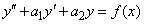
НЛДУ второго порядка
,
где  и
и  -
известные функции.
-
известные функции.
и -
известные функции.Общее решение НЛДУ 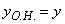 равно сумме
общего решения 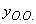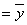 соответствующего
однородного уравнения 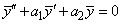 и частного решения  данного неоднородного уравнения 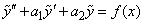, то есть
данного неоднородного уравнения 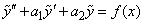, то есть  .
.
данного неоднородного уравнения 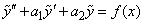, то есть .Доказательство:
Для  ,
,  справедливо: 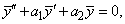 . Сложим эти уравнения почленно: 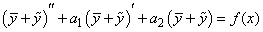, значит, является
общим решением НЛДУ.
справедливо: 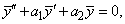 . Сложим эти уравнения почленно: 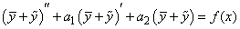, значит, является
общим решением НЛДУ.
, справедливо: 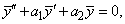 . Сложим эти уравнения почленно: 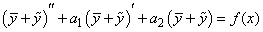, значит, является
общим решением НЛДУ.